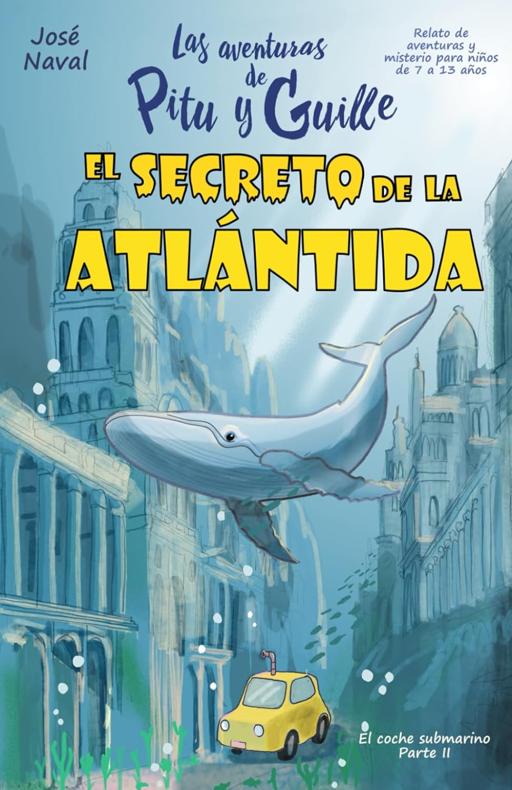
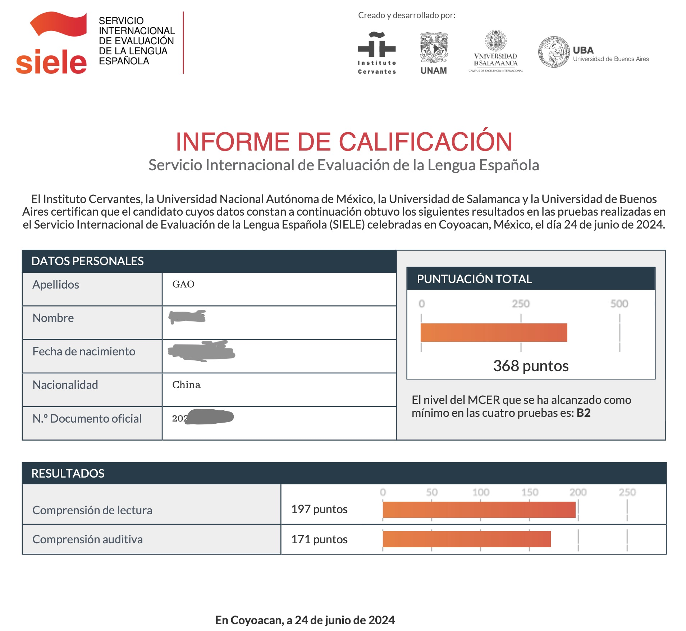

学习西班牙语的第四个月
引言：2024 年 2 月底，从成都经过旧金山转机 ✈️，我来到了墨西哥 🇲🇽。原本计划花半年时间一路向南旅行 🗺️，从墨西哥，危地马拉，秘鲁，直到阿根廷，但在墨西哥城停留一段时间后，说不出具体原因，但就是喜欢上了这座阳光明媚、绿树成荫、热情友好的城市。最终，旅行计划变成了 4 个月的西班牙语学习计划 🗒️，我想要用 4 个月时间，把西班牙语从零学到可以自由地读小说和听播客的水平。
第四个月的末尾，参加了西班牙语等级考试 SIELE 的阅读和听力考试，听力 B2，阅读 B2（口语和写作没考，自我估计在 A2 ～ B1；第二个月的末尾也考了一次 SIELE，听力 A2，阅读 B1）。但原定的目标还没有完全实现，读小说还是有很多生词，听播客也需要跟着西语字幕，因此后面的计划是慢慢积累词汇量啦。
第四个月的学习重点：
- 听力：精听了 Charlas Hispanas 的前 80 期播客，收听时长大约 40 小时；泛听了大量西语播客和 YouTube 西语视频。
- 词汇：读了 3 本西语儿童读物，一本巴西小说的西语译本；用西语助手背诵 A1 ～ A2 的生词。
- 语法：在 UNAM 大学的外国人教育中心上课，周一到周五每天上课四个半小时，老师带领我们用练习题、对话、作文、听力来反复应用过去式、将来式、宾语代词。
- 口语：课程中的一部分是一个西语话剧的排演，老师给我们纠正发音，每天睡前睡后都在背诵台词。
第四个月的学习中使用过的非常推荐的材料：
- El alquimista：畅销书《牧羊少年的奇幻之旅》的西语译本，175 页，词汇简单，非常推荐。中文版几年前就读过，讲诉一个追寻梦想的故事，“当你真心想要做成一件事，整个世界都会来帮助你”。考完 SIELE 之后，听了作者保罗·科埃略的英文采访，他说，“其实每个人都知道自己真正想要的是什么，只是大部分人忽略了它，不敢去实现它”。
- El secreto de la Atlántida：一本 97 页的儿童读物（7 ～ 13 岁），故事发生在海边，涉及很多海洋相关的词汇，但总体难度不大，kindle 版配图精美，情节很有趣。
- Charlas Hispanas：每期 10 分钟左右，每期由一个主播讲述语法、新闻、日常生活或拉美国家的文化习俗，三个主播分别为墨西哥、秘鲁和哥伦比亚人。作为精听的材料，好在发音清晰流畅，每期都有文稿、词汇表和练习题。
下个月的学习计划（下个月就回国了，计划每天学习西语的时间在一个半小时左右）：
- 积累词汇：用西语助手背诵 DELE B1 词汇
- 练习听力：精听 Charlas Hispanas
P.S. 外语学习理论回顾
第一个月的理论部分，介绍了外语学习最重要的两点，一是要有足够的乐趣驱动，二是要有足够长的时间浸泡在语言里。第二个月，介绍了通过阅读来积累词汇的一些窍门。第三个月，分享了用艾宾浩斯遗忘曲线来复习笔记的方法。
前三个月的初学阶段，通过阅读西语分级读物来提高阅读能力、积累词汇、熟悉上下文；在阅读能力的基础上，第四个月开始大量练习西语听力，培养西语语感；学到 B1 ～ B2 之后，词汇量逐渐成为提高阅读和听力能力的瓶颈，所以第四个月开始老老实实用西语助手背诵单词表，不求牢牢记住，只希望在听力和阅读中遇到时能有个印象。
如果继续在西语国家学习的话，第五个月开始，我可能会去和同等级的同学大量练习口语对话了，用西语去思考，这样也会提高阅读和听力的理解速度（根据学英语的经验）。但是由于我的间隔年到此也结束了，回国后，我打算主要用背单词和听播客的方式慢慢积累西语；找到合适的材料的话，希望能纠正西语发音，提升口语自信；词汇量提高，发音纠正后，再来西语国家，口语会提高很快。


文章作者 Harold Gao
上次更新 Jun 26, 2024